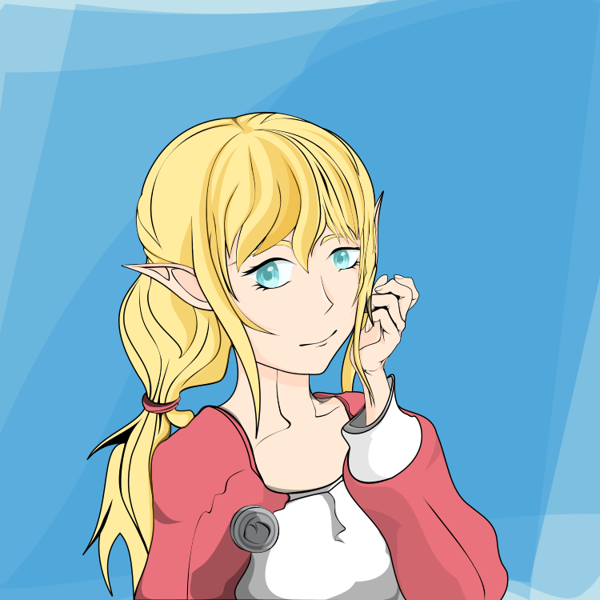

DIGITAL ART · ORIGINALS · FAN ART
May Suichika
A gallery of my artworks, digital drawing, original characters, anime and game fanart.
01 · ORIGINAL CHARACTERS
Fantasy ideas with an ordinary-life twist.
I’ve always loved fantasy—magic, mythical creatures, and ancient beings that might have lived long, long ago. At the same time, part of me still remembers the quiet rhythm of working 9 to 5.
What if witches still exist, quietly blending into modern life? Maybe they work ordinary jobs, pay ordinary bills, and keep extraordinary secrets.
Wouldn’t that be a lovely story?
02 · REDRAW / FAN ART
Studying characters by drawing them again.
We present fanart of anime and game characters as a tribute to the original creators whose inspired us to raise our flag and start our creative journey.
03 · SELECTED WORKS
Latest works from the archive.
Preview our latest artworks,Explore our artworks in this more than a gallery, this space maps our growth as creators—each artwork a chapter in our development progress of artistic freedom, strength, and discovery.
No artwork matches your search.

ABOUT THE ARTIST
Drawing enthusiasm.
I’m an amateur digital artist making original characters, illustrations, anime and game fan art, and sometimes stories. Redrawing and tracing have been part of my practice while I learn, experiment, and gradually develop a personal visual art.
他の旗を立てる。🏁